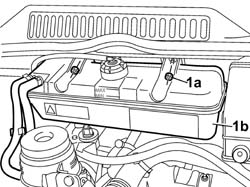
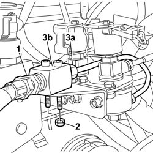

1043B21 INJECTORS GPL RETURN PIPE FITTING - R.R.
- Path
- Procedures > 10 ENGINE UNIT > 1043 GPL TANK AND PIPES > 1043B GPL FUEL CIRCUIT PIPES > 1043B21 INJECTORS GPL RETURN PIPE FITTING - R.R.
- Kind
- repair procedure (removal / refitting; the operation number is the code)
- Applies to
- engines: 2.0 16V; all production periods
- Interactive page
- https://sloeber94.github.io/elrnDB-fDct/en/#/244002661
Applies to: engines: 2.0 16V; all production periods
 Removing
Removing
 Refitting
RefittingDrain the return pipe from the injectors to the return solenoid valve, following the instructions in the procedure:
Op. 1043A02 LPG SYSTEM LINES PIPE DRAINING OPERATIONS
Disconnect the negative battery terminal.
1. Undo the nuts (1a) and move the engine coolant reservoir (1a) away from the work area, leaving the pipes connected.

Applies to: engines: 2.0 16V; all production periods
1. Undo the connector for the flexible return pipe from the injectors on the intermediate block.
Loosen the connectors for the rigid return pipe on the solenoid valve and on the intermediate block.
2. Undo the nuts fixing the intermediate connector to the mounting bracket.
3. Undo the connector (3a) for the rigid return pipe; then remove the intermediate block (3b).

Applies to: engines: 2.0 16V; all production periods
Refitting
RemovingPosition the intermediate block and secure it to the mounting bracket without tightening the retaining nuts.
Tighten the connector for the rigid return pipe to the intermediate block.
Value daNm | Fastening | Component | Ø | |
|---|---|---|---|---|
- | 2.5 | Connector | on the intermediate block | M12 X 1 |
Tighten the connector for the rigid return pipe to the solenoid valve to torque.
Value daNm | Fastening | Component | Ø | |
|---|---|---|---|---|
- | 1.5 | Connector | on the return solenoid valve | M10 X 1 |
Tighten the nuts fixing the intermediate block to the mounting bracket to torque.
Value daNm | Fastening | Component | Ø | |
|---|---|---|---|---|
- | 0.9 | Nut | to the mounting bracket | M6 |
Tighten the connector for the flexible return pipe from the injectors to the recommended torque.
Value daNm | Fastening | Component | Ø | |
|---|---|---|---|---|
- | 7 | Connector | on the return line intermediate block | M18 X 1.5 |
Position the engine coolant reservoir and secure it using the nuts.
Op. 1043A04 GPL SYSTEM AND PIPES CHECK FOR LEAKS
Connect the negative battery terminal.